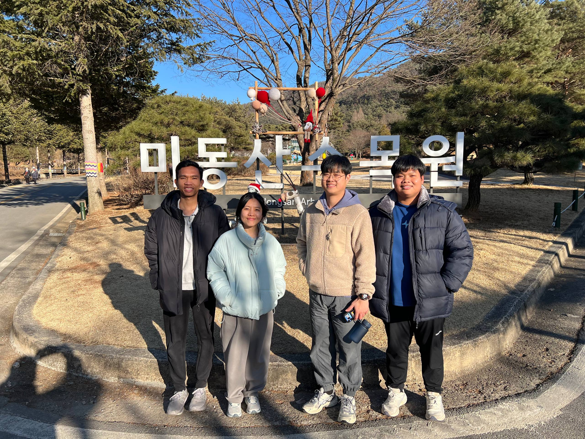
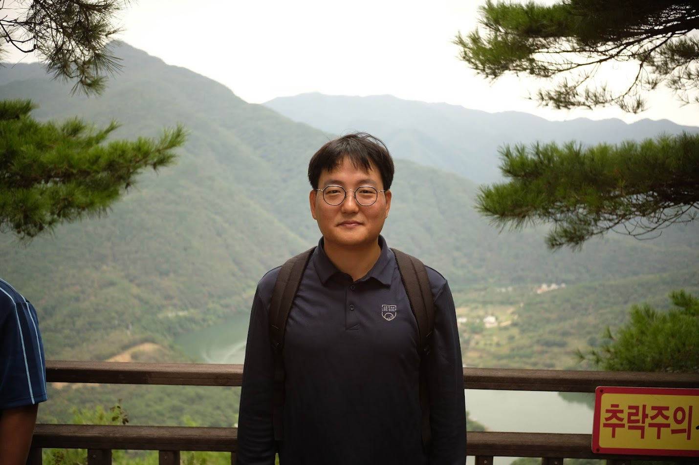
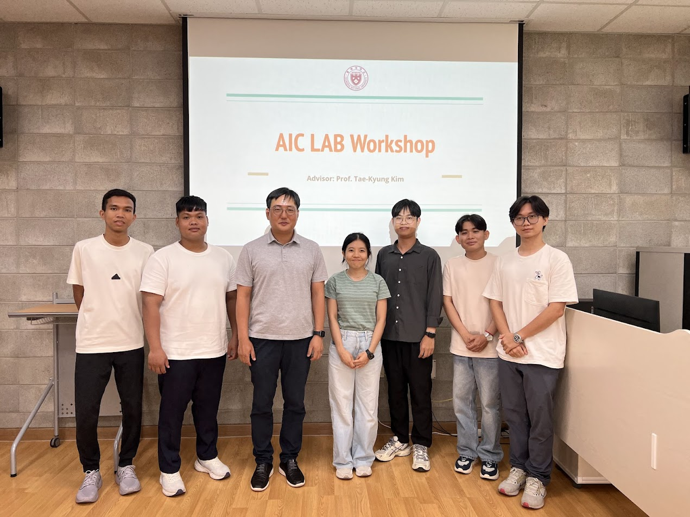

Team Building Activities
Strengthening bonds and fostering collaboration through memorable team experiences - Building a stronger research community together

Pre-semester Trip to Mungyeong
Our team traveled to Mungyeong for a pre-semester retreat to step away from routine and reconnect with one another. Through open conversations, shared experiences, and time to reflect, we strengthened our team dynamic and clarified both our collective vision and individual goals. Like preparing for a mountain ascent, this intentional pause allowed us to realign our direction, reinforce collaboration, and begin the Spring semester grounded, motivated, and ready to embrace new challenges together.

Walk at Midongsan Arboretum
Our team spent time walking through Midongsan Arboretum to slow down, breathe deeply, and reconnect with nature. Surrounded by trees and open space, we allowed ourselves a moment of calm introspection—stepping away from deadlines and responsibilities to reset our mindset. This quiet pause helped us re-center, regain clarity, and strengthen both our inner resilience and collective spirit, allowing us to begin the Spring semester grounded, focused, and prepared to move forward with renewed strength.

Hiking at Goesan Trail
Our team went on a day trip of hiking at the Goesan trail to build our stamina, train our mind and bodies, and re-envision our dream and commitment towards excellence.

A Trip to Mungyeong
Our team went on our first trip together to Mungyeong to collectively and collaboratively set our goals, enjoy the food and nature, and refocus before the starting of the Fall semester at CBNU.